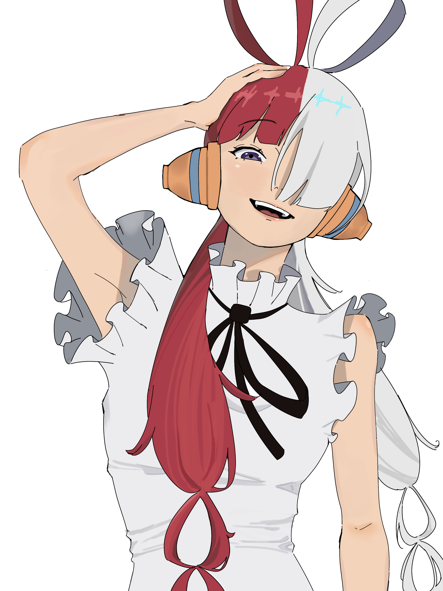
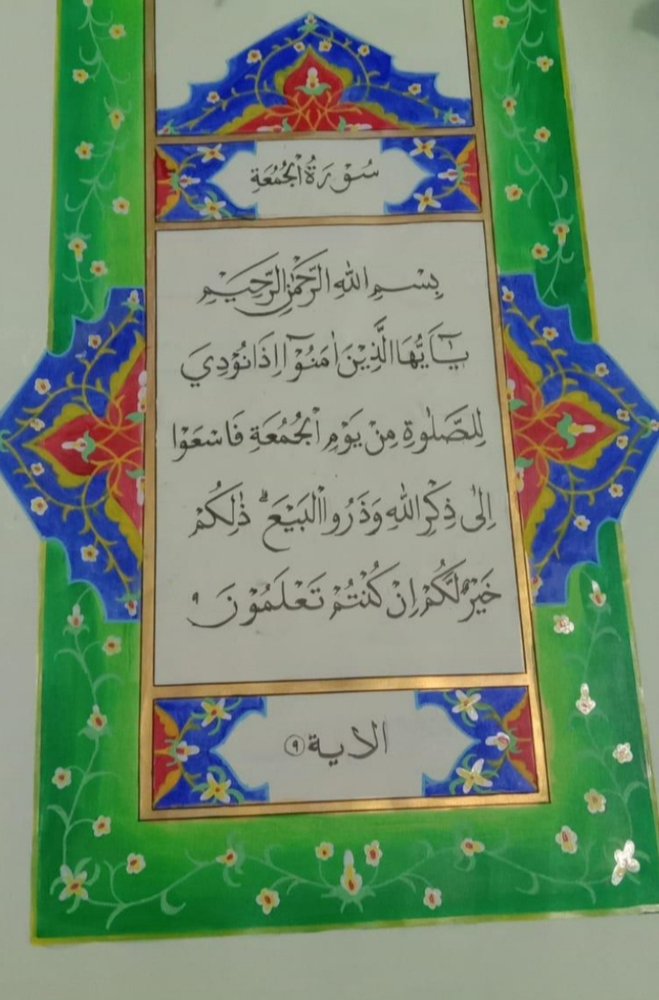

MY PROJECT
Uta from One Piece
Aku gambar ini udah dari lama, tapi selesai coloring baru banget hari ini. Aku ngga nonton One Piece karena episodenya banyak banged rek *angkat tangan. P.S. Baru sadar ini ternyata pose "Waduh" wkwkwk.
Poster bertema "Pikiran"

Proses pembuatan poster ini kira-kira semaleman. Tadinya kirain bakal ada yang mau bikin poster selain aku gataunya gaada yaudah dengan kekuatan Bandung Bondowoso jadi juga ini poster. Konteks "Siapa Dirimu?" itu nggambarin remaja yang krisis indentitas dan bakal sering mempertanyakan hal-hal kaya gini ke diri sendiri, agar tidak salah memilih jalan untuk karier masa depan, dibutuhkan otak yang berpikir. Udah itu aj.
Ayanami Rey form Neon Genesis Evangelion

Ini aku buat spontan waktu dengerin lagu City Pop Japan dan langsung keinget karakter ini. Aku ngga nonton animenya cuma tau karakternya. Terus aku pikir keren aja karakternya kaya Cyberpunk 2077
Kaligrafi Surah Al-Jumu'ah : 9
Kaligrafi ini aku buat waktu kelas 8, ini waktu latihan buat lomba kaligrafi tingkat komisariat kalo ngga salah dan aku dapat juara 2 Alhamdulillah cuy hehehe. Dan disini aku belajar teknik baru, gila pas pertama tau aneh banget ngapain pake bengsinü§î gataunya itu buat transfer cetakan hasil print an ke kertas kosong. Foto ini bukan hasil akhirnya, aku gak foto hasilnya karena habis lomba langsung pulang.